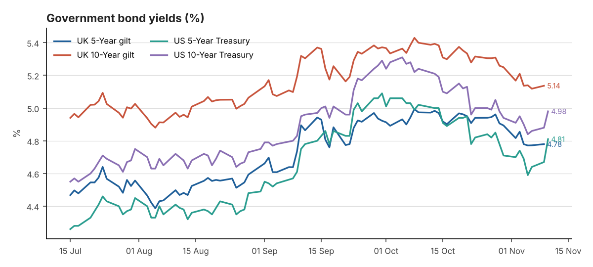
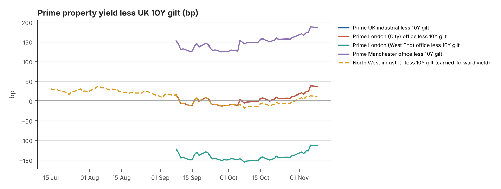

Date: 12 November 2026
Reporting time: 06:30 UK time
Generated 2026-11-12 06:30 UTC · run 20261112T063045Z · commentary: analyst note. Each figure shows its own observation date. Definitions, data-quality notes and full sources are in the appendix.
Alerts - Prime yield moves in the last 7 days (Knight Frank Prime Yield Guide, Nov 2026): UK Industrial & Logistics +12.5bp; Prime Distribution Warehouses +12.5bp; South East Industrial +12.5bp; Greater London Industrial +12.5bp; Prime Multi-let Industrial (Rest of UK) +12.5bp; London West End Offices +12.5bp; London City Offices +12.5bp; Manchester Offices +12.5bp; Regional UK Offices +12.5bp. - Corporate action — SEGRO: Recommended share offer from Prologis (0.0920 new Prologis shares per SEGRO share, partial cash alternative at 1,031.7p; completion expected H1 2027). Shares trade on deal terms.
| Market | Latest Yield | Daily | 7-Day | 30-Day | Observed | Source |
|---|---|---|---|---|---|---|
| UK 5-Year gilt | 4.78% | +0.7bp | -3.7bp | -19.4bp | 09 Nov 2026 | Bank of England Database (IADB) |
| UK 10-Year gilt | 5.14% | +1.8bp | -3.1bp | -26.3bp | 09 Nov 2026 | Bank of England Database (IADB) |
| US 5-Year Treasury | 4.81% | +14bp | +7bp | -21bp | 10 Nov 2026 | US Treasury - Daily Treasury Par Yield Curve Rates |
| US 10-Year Treasury | 4.98% | +10bp | +3bp | -26bp | 10 Nov 2026 | US Treasury - Daily Treasury Par Yield Curve Rates |
| UK 2-Year gilt | 4.76% ⚠ stale | Not verified | Not verified | Not verified | 05 Nov 2026 | News report (rallies.ai) of BoE decision-day trading (secondary) |
| UK 30-Year gilt | 5.63% | Not verified | Not verified | Not verified | 10 Nov 2026 | Trading Economics (secondary) |
| US 2-Year Treasury | 4.73% | +17bp | +12bp | -7bp | 10 Nov 2026 | US Treasury - Daily Treasury Par Yield Curve Rates |
| US 30-Year Treasury | 5.35% | +9bp | +3bp | -25bp | 10 Nov 2026 | US Treasury - Daily Treasury Par Yield Curve Rates |
10Y less 5Y: UK +35.7bp (09 Nov 2026) · US +17bp (10 Nov 2026)
Changes in basis points. † = comparison crosses sources or instruments (indicative).

| Indicator | Latest | Previous | Date | Change | Source |
|---|---|---|---|---|---|
| BoE Bank Rate | 4.00% | 3.75% | effective 05 Nov 2026 | +25bp | Bank of England Database (IADB) |
| SONIA (overnight fixing) | 3.9842% | 3.9852% | 09 Nov 2026 | -0.1bp | FRED IUDSOIA |
| 5Y SONIA swap (finance-cost reference) | 4.58% ⚠ stale | 4.74% | 04 Nov 2026 | -16bp | Knight Frank Prime Yield Guide (Macrobond/ICAP) (secondary) |
| Fed funds target range | 3.75–4.00% | 3.50–3.75% | effective 17 Sep 2026 | +25bp | FRED DFEDTARU |
Next MPC decision: 17 Dec 2026
Confirmed: - Bank Rate 4.00%; SONIA 3.98% (9 Nov); next MPC decision 17 December. - Fed range 3.75–4.00%. - Today's UK GDP and next week's UK labour market (17 Nov) and CPI (18 Nov) data are the next tests for MPC expectations.
Not verified: market-implied pricing for the December MPC.
Interpretation: a strong GDP print alongside 3.5% CPI would support a further rise. A weak print would ease pressure on 2–5 year swaps, the base for property debt.
| Indicator | Latest | Previous | Period | Trend | Source |
|---|---|---|---|---|---|
| UK CPI (12m) | 3.5% | 3.1% | Sep 2026 (pub. 21 Oct) | Accelerating | ONS MM23 |
| UK CPIH (12m) | 3.6% | 3.3% | Sep 2026 (pub. 21 Oct) | Accelerating | ONS MM23 |
| UK core CPI (12m, ex energy, food, alcohol & tobacco) | 2.8% | 2.6% | Sep 2026 (pub. 21 Oct) | Accelerating | ONS MM23 |
| US CPI-U (12m, NSA) | 3.7% | 3.4% | Sep 2026 | Accelerating | BLS CPI via FRED CPIAUCNS |
| US core CPI-U (12m, NSA) | 2.6% | 2.4% | Sep 2026 | Broadly stable | BLS CPI via FRED CPILFENS |
Next ONS inflation release: see Section 13
| Sector | Latest | Basis | Previous | Move | Evidence | Source |
|---|---|---|---|---|---|---|
| UK Industrial & Logistics | 5.50% | NIY | 5.25–5.50% | +12.5bp | Nov 2026 | Knight Frank Prime Yield Guide |
| Prime Distribution Warehouses ‡ | 5.50–5.75% | Not stated | 5.50% | +12.5bp | Nov 2026 | Knight Frank Prime Yield Guide |
| South East Industrial ‡ | 5.25–5.50% | Not stated | 5.25% | +12.5bp | Nov 2026 | Knight Frank Prime Yield Guide |
| Greater London Industrial | 5.25% | Not stated | 5.00–5.25% | +12.5bp | Nov 2026 | Knight Frank Prime Yield Guide |
| Prime Multi-let Industrial (Rest of UK) ‡ | 5.25–5.50% | Not stated | 5.25% | +12.5bp | Nov 2026 | Knight Frank Prime Yield Guide |
| North West Industrial ‡ | 5.25% | NIY | — | — | Q4 2025 ⚠ carried forward (316d) | Knight Frank LOGIC: North West 2025 Review |
| UK Logistics (average of 71 submarkets) ‡ | 5.74% | NIY | 5.59% | +15bp | Q3 2026 | Cushman & Wakefield UK Industrial MarketBeat |
| London West End Offices | 4.00% | Not stated | 3.75–4.00% | +12.5bp | Nov 2026 | Knight Frank Prime Yield Guide |
| London City Offices | 5.50% | Not stated | 5.25–5.50% | +12.5bp | Nov 2026 | Knight Frank Prime Yield Guide |
| Manchester Offices ‡ | 7.00% | Not stated | 6.75–7.00% | +12.5bp | Nov 2026 | Knight Frank Prime Yield Guide |
| Regional UK Offices ‡ | 7.00% | Not stated | 6.75–7.00% | +12.5bp | Nov 2026 | Knight Frank Prime Yield Guide |
Published prime yields, carried forward until new evidence appears — not daily valuations. ‡ = substitution; see appendix.
| Spread | Property yield | UK 10Y gilt | Latest spread | At evidence date | Previous comparable | Change (property / gilt) | Driver |
|---|---|---|---|---|---|---|---|
| Prime UK industrial less 10Y gilt | 5.50% (NIY, Nov 2026) | 5.14% (09 Nov) | +36.4bp | +38.2bp | +3.8bp (Oct 2026) | +32.6bp (+12.5bp / +20bp) | Both (reinforcing) |
| Prime London (City) office less 10Y gilt | 5.50% (Not stated, Nov 2026) | 5.14% (09 Nov) | +36.4bp | +38.2bp | +3.8bp (Oct 2026) | +32.6bp (+12.5bp / +20bp) | Both (reinforcing) |
| Prime London (West End) office less 10Y gilt | 4.00% (Not stated, Nov 2026) | 5.14% (09 Nov) | -113.6bp | -111.8bp | -146.2bp (Oct 2026) | +32.6bp (+12.5bp / +20bp) | Both (reinforcing) |
| Prime Manchester office less 10Y gilt | 7.00% (Not stated, Nov 2026) | 5.14% (09 Nov) | +186.4bp | +188.2bp | +153.8bp (Oct 2026) | +32.6bp (+12.5bp / +20bp) | Both (reinforcing) |
| North West industrial less 10Y gilt | 5.25% (NIY, Q4 2025) | 5.14% (09 Nov) | +11.4bp | +78.4bp | Not verified | Not verified | Not verified |
A simple yield gap (property yield midpoint less 10Y gilt) — not a full measure of risk or relative value.

Market commentary (confirmed data points are listed in the appendix)
On official data the gilt market has been stable since the Bank of England's hike. The 10-year par yield is 5.14%, 26bp lower over 30 days, and the 5-year is 4.78%. Market quotes for 11 November conflicted, so they are excluded. US Treasuries did not trade on 11 November.
The property news is about cost and viability rather than yields. Berkeley's withdrawal from Ladywood is a residential scheme, but the arithmetic carries over to commercial development. Construction and regulatory costs have risen faster than values, and higher-for-longer rates raise finance costs and exit yields. For industrial, Knight Frank's prime distribution yield of 5.50%+ is 25bp higher than in the summer, and more if measured from early 2025, while build costs have not fallen.
There are two partial offsets. Planning: Richborough's grey-belt appeal win at the M42 suggests the revised NPPF can unlock logistics land. If repeated, that improves land supply and lowers land-promotion risk. Demand: pre-lets such as DHL's conditional 420,000 sq ft at Ansty show occupiers will commit early, which makes large schemes fundable.
Interpretation: bond markets are not adding new pressure this week, but they are not easing appraisal maths either. Expect developers to prioritise pre-let and forward-funded schemes, and investors to price smaller regional lots at 6.5–7% NIY, as in Custodian's portfolio.
| Company | Price | Daily | 5-Day | 1-Month | YTD | Mkt cap | Div. yield | Close | Source |
|---|---|---|---|---|---|---|---|---|---|
| SEGRO (SGRO.L) | 922.6p | — | — | — | — | Not verified | 3.4% | 09 Nov | StockInvest.us (single dated source) (secondary) |
| Tritax Big Box REIT (BBOX.L) | 145.4p | — | — | — | — | Not verified | 5.5% | 27 Oct ⚠ stale | Kalkine Media (dated 27 Oct 2026; single source) (secondary) |
| LondonMetric Property (LMP.L) | 188.2p | +0.2% | — | — | — | Not verified | 6.7% | 09 Nov | StockInvest.us; corroborated by AJ Bell last trade 188.2p (secondary) |
| British Land (BLND.L) | Not verified | — | — | — | — | Not verified | — | — | — |
| Landsec (LAND.L) | 659.0p | — | — | — | — | Not verified | — | 27 Oct ⚠ stale | Kalkine Media (dated 27 Oct 2026; single source) (secondary) |
| Derwent London (DLN.L) | Not verified | — | — | — | — | Not verified | — | — | — |
| Great Portland Estates (GPE.L) | Not verified | — | — | — | — | Not verified | — | — | — |
| Prologis (PLD) | $130.03 | -0.1% | -1.0% | -1.8% | +1.9% | Not verified | — | 11 Nov | Nasdaq (official close) |
International logistics comparators
| Company | Price | Daily | 5-Day | 1-Month | YTD | Mkt cap | Div. yield | Close | Source |
|---|---|---|---|---|---|---|---|---|---|
| EastGroup Properties (EGP) | $197.94 | -0.3% | -1.5% | +0.2% | +11.1% | Not verified | — | 11 Nov | Nasdaq (official close) |
| First Industrial Realty Trust (FR) | $55.26 | +0.6% | -0.5% | -8.0% | -3.5% | Not verified | — | 11 Nov | Nasdaq (official close) |
| Rexford Industrial Realty (REXR) | $37.83 | -0.3% | -3.6% | +0.8% | -2.3% | Not verified | — | 11 Nov | Nasdaq (official close) |
| WDP (Warehouses De Pauw) (WDP.BR) | Not verified | — | — | — | — | Not verified | — | — | — |
| CTP (CTPNV.AS) | Not verified | — | — | — | — | Not verified | — | — | — |
Latest completed trading session before the 06:30 UK briefing; end-of-day data, not real-time. London prices are in pence (GBX); US in USD; Euronext in EUR. Changes are share-price returns only, excluding dividends (not total shareholder return). ⚑ = daily move of 3% or more. Market caps from Nasdaq are as at retrieval. Dividend yield = latest annualised dividend from company reports ÷ price, where on file. "Not verified" = no licensed price feed returned data and no cited close is on file.
SEGRO — Prologis offer look-through: 0.0920 × Prologis close $130.03 (11 Nov) ÷ $1.3371/£ (06 Nov, FRED) = 894.7p per SEGRO share in Prologis stock, vs SEGRO close 922.6p (-3.0% offer spread). Partial cash alternative: 1031.7p (capped). The FX rate lags by several days, so this is indicative only.
Corporate actions on the watchlist
| Metric | SEGRO | Tritax Big Box REIT | LondonMetric Property |
|---|---|---|---|
| EPRA NTA per share | 902p | 185.88p | 200.6p |
| Loan-to-value | 31% | 32.9% | 36.7% |
| Average cost of debt | 2.8% | 3.6% | 4.0% |
| WAULT | — | 9.9 yrs | 16+ yrs |
| Occupancy | 94.5% | 93.5% | 97.4% |
| Like-for-like rental growth | 5.3% | 5.1% | 5.8% |
| ERV growth | 1.8% | 1.9% | 3.3% |
| Development pipeline | £90m potential rent | 507MW secured power | No direct development |
| Dividend (annualised) | 31.1p | 8.0p | 12.6p |
| Report basis | H1 2026 (30 Jun) | H1 2026 (30 Jun) | FY 2026 (31 Mar) |
| Premium / (discount) to EPRA NTA | +2.3% (price 09 Nov) | -21.8% (price 27 Oct) | -6.2% (price 09 Nov) |
Metrics are from each company's latest report (row "Report basis"; some metrics come from later trading updates — full detail in data/reit_fundamentals.csv). Share-price dates are shown separately.
| Date | Company | Announcement | Type |
|---|---|---|---|
| 2026-11-05 | DLN | Third Quarter Business Update | Trading update |
| 2026-11-04 | LMP | NON-EXECUTIVE DIRECTOR CHANGES | Board |
| 2026-11-02 | LMP | RETIREMENT OF MARTIN MCGANN | Board |
| 2026-10-29 | LAND | Landsec completes the acquisition of Metrocentre | M&A / corporate action |
Verified: - No new SEGRO, Tritax or LondonMetric announcements since yesterday. - Latest cited closes: SEGRO 922.6p (9 Nov), 2.3% above June NTA of 902p; LondonMetric 188.2p (9 Nov), 6.2% below March NTA. Tritax's latest cited close is 145.4p (27 Oct, stale), 21.8% below June NTA. - Prologis closed at $130.03 on 11 November (−0.1%).
Interpretation: - SEGRO trading above the share-offer look-through could reflect the 1,031.7p cash alternative, dividends due before completion, or simply the mismatched price dates. Treat the gap as indicative. - Tritax's apparent discount uses a stale price and should be refreshed before drawing conclusions. - Correlation between gilts and listed REIT prices does not establish cause.
Next: LondonMetric half-year results on 24 November.
1. Birmingham's £2.2bn Ladywood regeneration plans axed over viability pressures
PLANNING / DEVELOPMENT · new · Property Week, published 2026-11-11
Berkeley Group and Birmingham City Council have terminated the development agreement for the £2.2bn Ladywood Estate regeneration, a 148-acre, 20-year scheme for more than 10,000 homes. They cite increased construction and regulatory costs and a more challenged housing market and economy as putting significant pressure on viability.
Why this matters: When a developer of Berkeley's scale walks away on viability, it shows that build costs and rates are breaking long-dated appraisals. The same pressures apply to speculative industrial schemes: exit yields are drifting out while costs stay high, so more projects will need pre-lets or forward funding to proceed.
2. Richborough Commercial secures major appeal win on M42 corridor scheme
UK INDUSTRIAL · ▲ 100,000+ sq ft · new · Property Week, published 2026-11-04
Richborough Commercial has won outline consent at appeal for up to 700,000 sq ft of B2/B8 floorspace near M42 Junction 9 in North Warwickshire, after appealing against non-determination of a June 2024 application. Richborough says it is the first appeal allowing a major industrial and logistics scheme on grey-belt land since the revised NPPF in August. (Published before the last briefing but not previously reported.)
Why this matters: A first grey-belt appeal win for logistics could unlock land supply around constrained cores, including Green Belt-heavy Greater Manchester and Cheshire. That raises land-value expectations for promoters but should, over time, ease the supply shortage that has supported North West rents.
3. BARJANE submits plans for 420,000 sq ft DHL warehouse
UK INDUSTRIAL · ▲ 100,000+ sq ft · new · Property Week, published 2026-11-04
BARJANE has applied for a 420,000 sq ft logistics scheme at Ansty, Coventry, next to Frasers Group's approved 3.3m sq ft headquarters. DHL Supply Chain has agreed to occupy the BREEAM Outstanding, EPC A warehouse if planning permission is granted, giving the scheme a conditional pre-let at the M6/M69 junction. (Published before the last briefing but not previously reported.)
Why this matters: Big-box demand is turning into pre-let development rather than speculative space. This is the route North West schemes above 300,000 sq ft are likely to need while exit yields sit at 5.50%+.
6. Bolton pursues legal challenge into national planning changes
PLANNING / DEVELOPMENT · new · Place North West, published 2026-11-11
Bolton Council has complied 'under protest' with the National Scheme of Delegation, which makes planning officers the default decision-makers for most applications. It voted to cost a judicial review and to write to all English planning authorities seeking a coordinated legal challenge against the government.
7. £2bn Manchester-Sheffield tunnel gets funding boost
PLANNING / DEVELOPMENT · new · Place North West, published 2026-11-11
Future Works Infrastructure's Trans-Pennine Connect, a proposed 14-mile tolled dual carriageway with a tunnel between Manchester and Sheffield, has received £500,000 from the UK Dynamism Fund for feasibility work. The scheme, estimated at £2bn, would be funded by tolls and private or local-authority investors rather than central government.
8. B&Q to cut 63,000 sq ft in Bolton as it looks to right-size
PLANNING / DEVELOPMENT · ▲ 100,000+ sq ft · new · Place North West, published 2026-11-11
BNP Paribas has applied to subdivide B&Q's 137,000 sq ft Kay Street store in Bolton into three units, cutting B&Q's space by 63,000 sq ft. Aldi would take a new 20,000 sq ft store, relocating from Higher Bridge Street, using space currently occupied by B&Q's Trade Point facility.
No significant new North West industrial stories were found for this period.
North West outlook
There was no significant new North West industrial transaction in the past 24 hours. Regionally, the news is about planning process. Bolton is challenging national rules that make officers the default decision-makers; if upheld, those rules should speed routine consents. Larger B2/B8 schemes on Green Belt edges could benefit from the grey-belt precedent set at the M42. B&Q's planned subdivision of its 137,000 sq ft Bolton store shows large retail boxes being recycled. Pricing: the Manchester prime industrial benchmark (5.25%, Q4 2025) is still stale; about 5.50% remains the working assumption (not verified). Equity-led buyers will favour reversionary multi-let estates.
4. Custodian REIT acquires £11m portfolio from syndicated investment vehicles
PROPERTY INVESTMENT · new · Property Week, published 2026-11-09
Custodian Property Income REIT has bought eight fully let retail and industrial properties, mainly in the East Midlands, for £11m from syndicates managed by Lincoln Property Syndicates. The £800,000 rent reflects a 6.7% net initial yield and 7.2% reversionary yield, funded largely by issuing 10.6m new shares plus £400,000 cash. (Published before the last briefing but not previously reported.)
5. Criterion snaps up New London House for 500-room hotel conversion
OFFICES · 20,000+ sq ft · new · Property Week, published 2026-11-10
Criterion Capital's Zedwell Hotels has bought New London House, an 89,722 sq ft office on Fenchurch Street in the City, from Whitbread for an undisclosed sum, and plans to convert it into a 509-room hotel. Zedwell says it targets structurally sound, well-located buildings where conversion unlocks value. (Published before the last briefing but not previously reported.)
| Date | Event |
|---|---|
| Thu 12 Nov | UK GDP first quarterly estimate Q3 2026 and monthly GDP (September) - 07:00 |
| Fri 13 Nov | US PPI (October) - 13:30 UK |
| Tue 17 Nov | UK labour market overview - 07:00 |
| Wed 18 Nov | UK consumer price inflation (October) - 07:00 |
Confirmed data points used in the commentary
Retrieval failures and data gaps
Property yield substitutions (‡)
Definitions
Analyst sources
Prepared from public sources for professional information; not investment advice. History: data/observations.csv, data/share_prices.csv, data/news_log.csv, data/announcements.csv; audit trail: data/audit_log.csv.